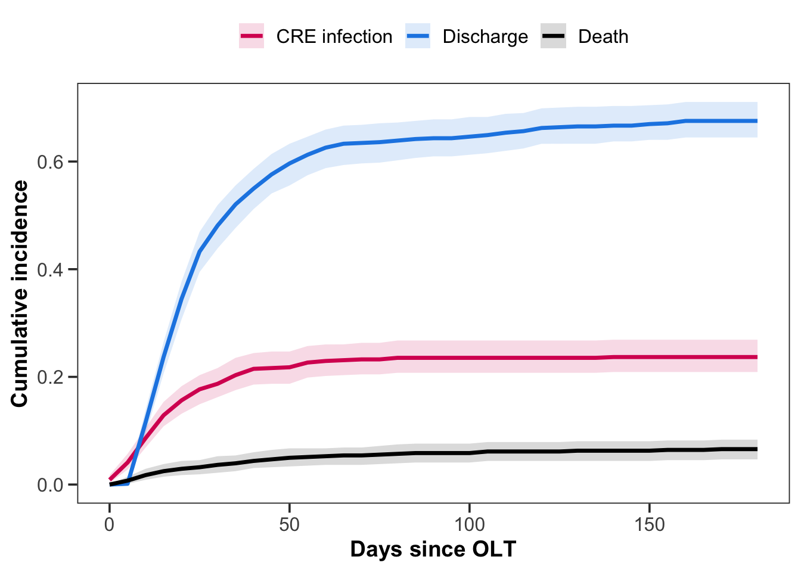
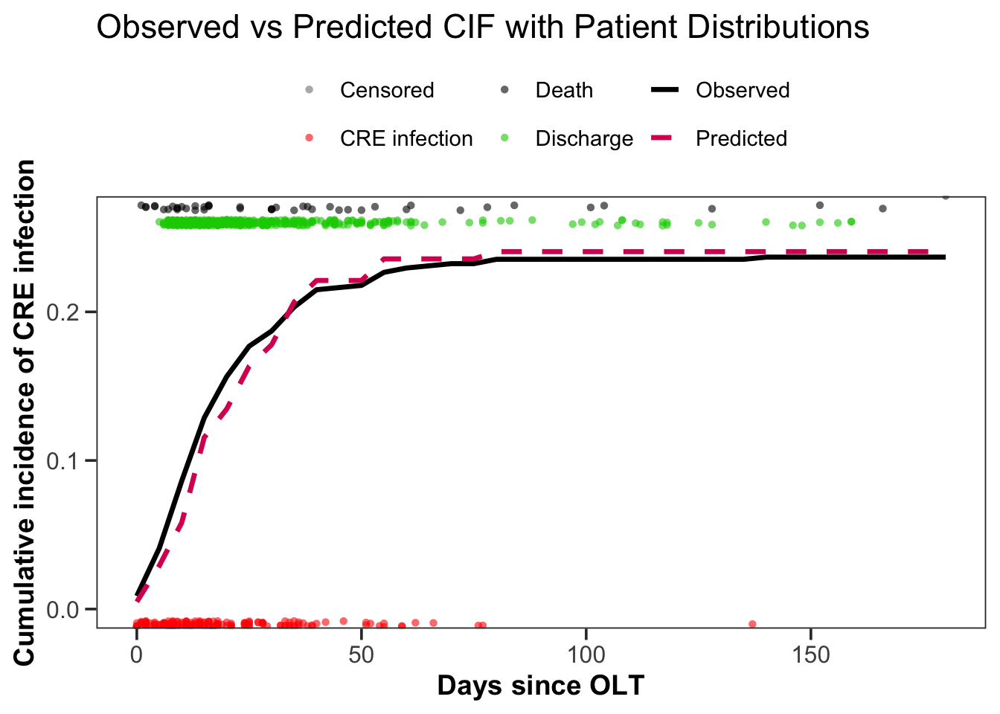
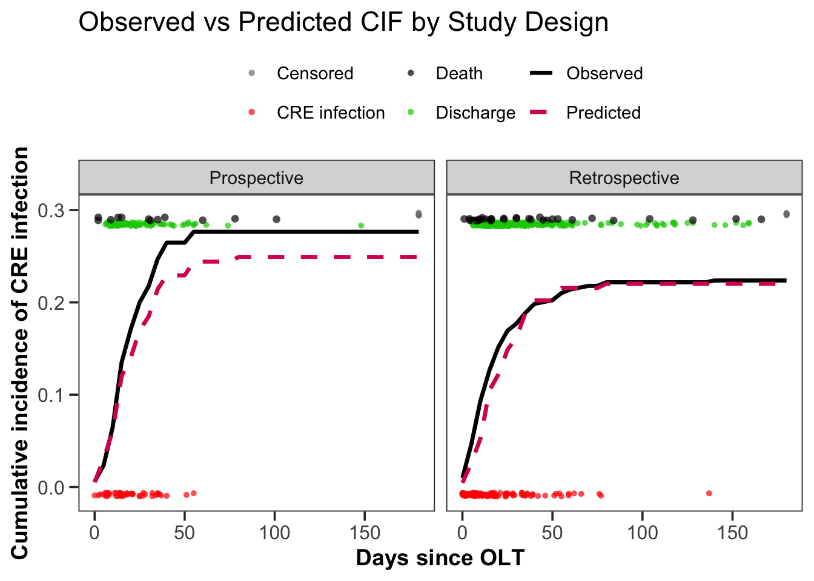
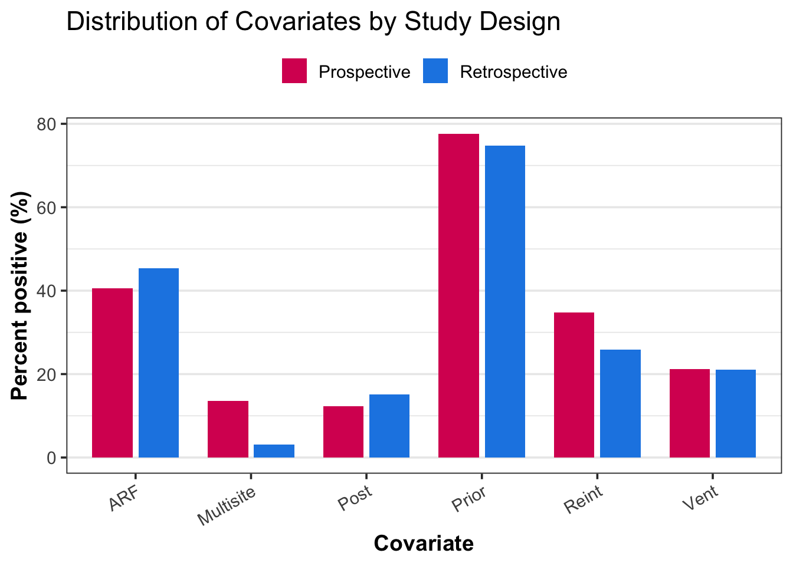
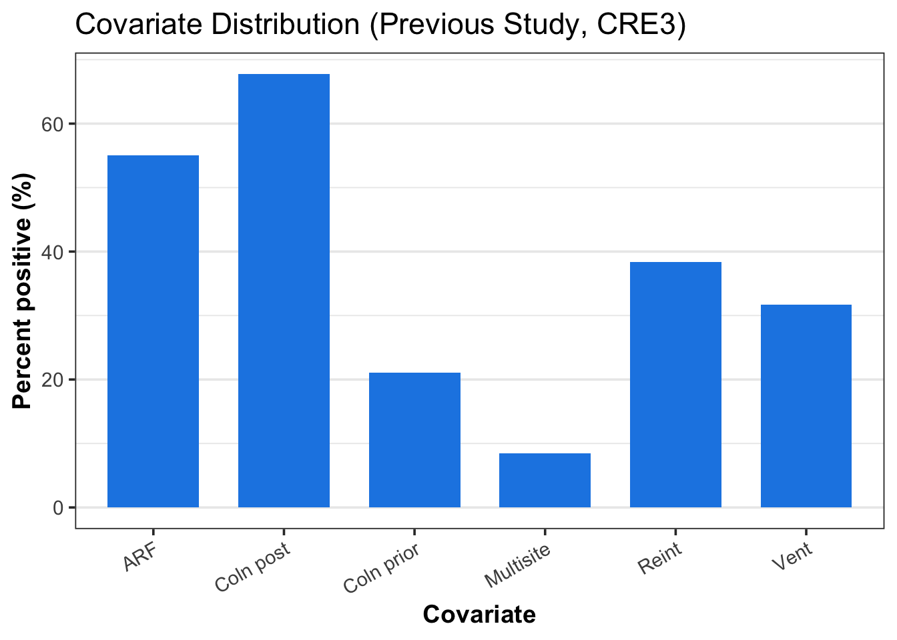

Validation cohort
Descriptive analysis of cumulative incidence of censoring, hospital discharge, CRE infection or death. A competing risk (Fine-Gray) model was fitted to outcome of death, hospital discharge, or CRE infection censored to day 180. The cumulative incidence of competing risks are shown in Figure 1.
Code
# -------------------------------------------------
# 1. Unadjusted Fine–Gray (CRE infection as event)
# -------------------------------------------------
library(prodlim)
library(riskRegression)
library(ggplot2)
library(dplyr)
library(tidyr)
library (here)
library(here)
# Load the exported dataset
data_extract <- read.csv(here("data", "data_extract.csv"), stringsAsFactors = FALSE)
# Quick check
set.seed(123) # for reproducibility
# ----------------------------
# 1. Prepare data
# ----------------------------
df_model <- data.frame(
time_c = as.numeric(data_extract$time_c),
outcome_comp = as.integer(data_extract$outcome_comp)
) %>%
filter(!is.na(time_c) & time_c >= 0)
# ----------------------------
# 2. Base CIF fit
# ----------------------------
ci_fit <- prodlim(Hist(time_c, outcome_comp) ~ 1, data = df_model)
# ----------------------------
# 3. Times to evaluate
# ----------------------------
times_seq <- seq(0, 180, by = 5)
# ----------------------------
# 4. Bootstrap CIF estimates
# ----------------------------
B <- 200 # number of bootstrap resamples (increase to 1000 for publication)
boot_cif <- function(data, times, cause) {
fit <- prodlim(Hist(time_c, outcome_comp) ~ 1, data = data)
predict(fit, cause = cause, times = times)
}
boot_results <- lapply(1:3, function(cause) {
mat <- replicate(B, {
idx <- sample(nrow(df_model), replace = TRUE)
boot_data <- df_model[idx, ]
boot_cif(boot_data, times_seq, cause)
})
# mean and CI across bootstrap runs
est <- predict(ci_fit, cause = cause, times = times_seq)
lower <- apply(mat, 1, quantile, 0.025, na.rm = TRUE)
upper <- apply(mat, 1, quantile, 0.975, na.rm = TRUE)
data.frame(times = times_seq, CIF = est, lower = lower, upper = upper,
cause = factor(cause))
})
ci_tidy <- bind_rows(boot_results) %>%
mutate(cause = recode(cause,
"1" = "CRE infection",
"2" = "Discharge",
"3" = "Death"))
# ----------------------------
# 5. NEJM-style plot
# ----------------------------
nejm_colors <- c("CRE infection" = "#D81B60",
"Discharge" = "#1E88E5",
"Death" = "black")
p_nejm <- ggplot(ci_tidy, aes(x = times, y = CIF, color = cause, fill = cause)) +
geom_ribbon(aes(ymin = lower, ymax = upper), alpha = 0.15, color = NA) +
geom_line(size = 1.2) +
labs(x = "Days since OLT",
y = "Cumulative incidence",
color = NULL, fill = NULL) +
scale_color_manual(values = nejm_colors) +
scale_fill_manual(values = nejm_colors) +
theme_bw(base_size = 14) +
theme(
panel.grid = element_blank(),
legend.position = "top",
legend.title = element_blank(),
legend.text = element_text(size = 12),
axis.title = element_text(size = 14, face = "bold"),
axis.text = element_text(size = 12),
axis.ticks.length = unit(0.2, "cm")
)
print(p_nejm)A competing risk multivariate, Fine-gray model for day+180 CRE infection was then fitted using the original CRECOOLT covariate from the score:
Surgical re intervention after OLT
Need for mechanical ventilation
Acute renal failure after transplant
CRE colonization prior to OLT
CRE colonization after OLT
KPC-carbapenemase producing organism
NoteClarification from previous analysis
In this initial analysis I have not yet created a new variable limiting CRE colonization to within 60 days pretransplant. The MDRO organism risk factor was limited to KPC-producing isolates.
Predicted cumulative incidence of CRE infection versus the observed for the total (retrospective plus prospective cohort) is shown in Figure 2.
Code
#############################################
## Multivariable Fine–Gray + Calibration Plot
## with Jittered Dots + Legend for Outcomes
#############################################
library(dplyr)
library(cmprsk)
library(riskRegression)
library(prodlim)
library(ggplot2)
# ============================================================
# 1. Prepare dataset with covariates
# ============================================================
df_model <- data_extract %>%
mutate(
post_olt_compli1 = ifelse(post_olt_compli___1 == 1, 1, 0),
post_olt_compli3 = ifelse(post_olt_compli___3 == 1, 1, 0),
post_olt_compli5 = ifelse(post_olt_compli___5 == 1, 1, 0),
multisite_col = ifelse(multisite_colonization == 1, 1, 0),
cre_col1 = ifelse(cre_colonization___1 == 1, 1, 0),
cre_col2 = ifelse(cre_colonization___2 == 1, 1, 0),
mec1 = ifelse(mec_of_carbapenem_resi___1 == 1, 1, 0)
) %>%
select(time_c, outcome_comp,
post_olt_compli1, post_olt_compli3, post_olt_compli5,
multisite_col, cre_col1, cre_col2, mec1) %>%
filter(!is.na(time_c) & time_c >= 0)
# ============================================================
# 2. Fit Fine–Gray model (cause = CRE infection)
# ============================================================
fg_risk <- FGR(
Hist(time_c, outcome_comp) ~
post_olt_compli1 + post_olt_compli3 + post_olt_compli5 +
multisite_col + cre_col1 + cre_col2 + mec1,
data = df_model,
cause = 1
)
# ============================================================
# 3. Predictions vs Observed CIF
# ============================================================
times_seq <- seq(0, 180, by = 5)
pred_cif <- predict(
fg_risk,
newdata = df_model,
cause = 1,
times = times_seq,
se = FALSE,
keep.newdata = FALSE
)
pred_df <- data.frame(
times = times_seq,
CIF_pred = colMeans(pred_cif, na.rm = TRUE)
)
ci_fit <- prodlim(Hist(time_c, outcome_comp) ~ 1, data = df_model)
obs_df <- data.frame(
times = times_seq,
CIF_obs = predict(ci_fit, cause = 1, times = times_seq)
)
plot_df <- left_join(obs_df, pred_df, by = "times")
# ============================================================
# 4. Dot dataset with event type
# ============================================================
dot_df <- df_model %>%
mutate(
dot_type = case_when(
outcome_comp == 1 ~ "CRE infection",
outcome_comp == 2 ~ "Discharge",
outcome_comp == 3 ~ "Death",
outcome_comp == 0 ~ "Censored"
),
# assign strip positions
y_pos = case_when(
outcome_comp == 1 ~ -0.01, # infections (bottom)
outcome_comp == 2 ~ 0.26, # discharge
outcome_comp == 3 ~ 0.27, # death
outcome_comp == 0 ~ 0.28 # censored
)
) %>%
filter(!is.na(dot_type))
# ============================================================
# 5. NEJM-style plot with jittered dots + legend
# ============================================================
nejm_colors <- c("Observed" = "black",
"Predicted" = "#D81B60")
dot_colors <- c("CRE infection" = "red",
"Discharge" = "green3",
"Death" = "black",
"Censored" = "grey50")
p_calib <- ggplot(plot_df, aes(x = times)) +
# Calibration curves
geom_line(aes(y = CIF_obs, color = "Observed"), size = 1.2) +
geom_line(aes(y = CIF_pred, color = "Predicted"),
size = 1.2, linetype = "dashed") +
# Jittered dots with legend
geom_jitter(
data = dot_df,
aes(x = time_c, y = y_pos, color = dot_type),
inherit.aes = FALSE,
width = 0, height = 0.002,
shape = 16, alpha = 0.6, size = 1.5
) +
labs(x = "Days since OLT",
y = "Cumulative incidence of CRE infection",
title = "Observed vs Predicted CIF with Patient Distributions") +
scale_color_manual(values = c(nejm_colors, dot_colors)) +
coord_cartesian(ylim = c(0, max(plot_df$CIF_obs, plot_df$CIF_pred, na.rm = TRUE) * 1.1)) +
theme_bw(base_size = 14) +
theme(
panel.grid = element_blank(),
legend.position = "top",
legend.title = element_blank(),
legend.text = element_text(size = 11),
axis.title = element_text(size = 14, face = "bold"),
axis.text = element_text(size = 12),
axis.ticks.length = unit(0.2, "cm")
)
print(p_calib)
The calibration of the CRECOOLT prediction model stratified by retrospective versus prospectively enrolled patients in shown in Figure 3.
Code
#############################################
## Stratified calibration with separated outcome dots
#############################################
library(dplyr)
library(riskRegression)
library(prodlim)
library(ggplot2)
## 1) Prep with study design
df_model <- data_extract %>%
mutate(
post_olt_compli1 = as.integer(post_olt_compli___1 == 1),
post_olt_compli3 = as.integer(post_olt_compli___3 == 1),
post_olt_compli5 = as.integer(post_olt_compli___5 == 1),
multisite_col = as.integer(multisite_colonization == 1),
cre_col1 = as.integer(cre_colonization___1 == 1),
cre_col2 = as.integer(cre_colonization___2 == 1),
mec1 = as.integer(mec_of_carbapenem_resi___1 == 1),
retro_group = factor(ifelse(retro_or_pros == 1, "Retrospective", "Prospective"))
) %>%
select(time_c, outcome_comp, retro_group,
post_olt_compli1, post_olt_compli3, post_olt_compli5,
multisite_col, cre_col1, cre_col2, mec1) %>%
filter(!is.na(time_c) & time_c >= 0 & !is.na(retro_group))
## 2) Fit FG once on full data
fg_risk <- FGR(
Hist(time_c, outcome_comp) ~
post_olt_compli1 + post_olt_compli3 + post_olt_compli5 +
multisite_col + cre_col1 + cre_col2 + mec1,
data = df_model,
cause = 1
)
## 3) Time grid
times_seq <- seq(0, 180, by = 5)
## 4) Helper to get obs + pred per subgroup
get_obs_pred <- function(dat, group_label){
if (nrow(dat) < 2) return(NULL)
ci_fit <- prodlim(Hist(time_c, outcome_comp) ~ 1, data = dat)
obs_df <- data.frame(
times = times_seq,
CIF_obs = predict(ci_fit, cause = 1, times = times_seq)
)
pred_cif <- predict(
fg_risk, newdata = dat, cause = 1, times = times_seq,
se = FALSE, keep.newdata = FALSE
)
pred_df <- data.frame(
times = times_seq,
CIF_pred = colMeans(pred_cif, na.rm = TRUE)
)
dplyr::left_join(obs_df, pred_df, by = "times") %>%
mutate(group = group_label)
}
## 5) Build calibration data for facets
plot_df <- bind_rows(
get_obs_pred(filter(df_model, retro_group == "Retrospective"), "Retrospective"),
get_obs_pred(filter(df_model, retro_group == "Prospective"), "Prospective")
)
## --- Dynamic strip positions so dots never get clipped ----
y_max <- max(plot_df$CIF_obs, plot_df$CIF_pred, na.rm = TRUE)
y_bottom <- -0.03 * y_max # CRE dots (bottom)
y_top_base <- 1.02 * y_max # base just above curves
y_discharge <- y_top_base + 0.01 * y_max
y_death <- y_top_base + 0.03 * y_max
y_censored <- y_top_base + 0.05 * y_max
y_min_plot <- y_bottom - 0.01 * y_max
y_max_plot <- y_top_base + 0.07 * y_max
## 6) Dot data (with facet variable)
dot_df <- df_model %>%
mutate(
group = retro_group, # match facet variable
dot_type = case_when(
outcome_comp == 1 ~ "CRE infection",
outcome_comp == 2 ~ "Discharge",
outcome_comp == 3 ~ "Death",
outcome_comp == 0 ~ "Censored",
TRUE ~ NA_character_
),
y_pos = case_when(
outcome_comp == 1 ~ y_bottom,
outcome_comp == 2 ~ y_discharge,
outcome_comp == 3 ~ y_death,
outcome_comp == 0 ~ y_censored,
TRUE ~ NA_real_
)
) %>%
filter(!is.na(dot_type))
## 7) Plot
nejm_colors <- c("Observed" = "black",
"Predicted" = "#D81B60")
dot_colors <- c("CRE infection" = "red",
"Discharge" = "green3",
"Death" = "black",
"Censored" = "grey50")
p_calib_strat <- ggplot(plot_df, aes(x = times)) +
# curves
geom_line(aes(y = CIF_obs, color = "Observed"), size = 1.2) +
geom_line(aes(y = CIF_pred, color = "Predicted"),
size = 1.2, linetype = "dashed") +
# dots (with facet-aware data)
geom_jitter(
data = dot_df,
aes(x = time_c, y = y_pos, color = dot_type),
inherit.aes = FALSE,
width = 0, height = 0.002,
shape = 16,
alpha = 0.7,
size = ifelse(dot_df$dot_type == "Death", 1.9, 1.4) # make deaths a touch larger
) +
facet_wrap(~group) +
labs(x = "Days since OLT",
y = "Cumulative incidence of CRE infection",
title = "Observed vs Predicted CIF by Study Design") +
scale_color_manual(values = c(nejm_colors, dot_colors)) +
coord_cartesian(ylim = c(y_min_plot, y_max_plot)) +
theme_bw(base_size = 14) +
theme(
panel.grid = element_blank(),
legend.position = "top",
legend.title = element_blank(),
legend.text = element_text(size = 11),
axis.title = element_text(size = 14, face = "bold"),
axis.text = element_text(size = 12),
axis.ticks.length = unit(0.2, "cm")
)
print(p_calib_strat)
The distribution of model covariates differed somewhat in the retrospective versus prospective groups as shown in Figure 4.
Code
#############################################
## Bar plot of covariate distribution
## Retrospective vs Prospective cohorts
## with custom labels
#############################################
library(dplyr)
library(tidyr)
library(ggplot2)
# ============================================================
# 1. Select the covariates of interest
# ============================================================
covariates <- c("post_olt_compli1", "post_olt_compli3", "post_olt_compli5",
"multisite_col", "cre_col1", "cre_col2", "mec1")
df_cov <- df_model %>%
select(retro_group, all_of(covariates))
# ============================================================
# 2. Reshape to long format
# ============================================================
df_long <- df_cov %>%
pivot_longer(
cols = all_of(covariates),
names_to = "covariate",
values_to = "value"
)
# ============================================================
# 3. Summarize % positive per group
# ============================================================
df_summary <- df_long %>%
group_by(retro_group, covariate) %>%
summarise(
n = n(),
n_pos = sum(value == 1, na.rm = TRUE),
pct_pos = 100 * n_pos / n,
.groups = "drop"
) %>%
mutate(
covariate_label = recode(covariate,
"cre_col1" = "Prior",
"cre_col2" = "Post",
"mec1" = "KPC",
"multisite_col" = "Multisite",
"post_olt_compli1" = "ARF",
"post_olt_compli3" = "Vent",
"post_olt_compli5" = "Reint"
)
)
# ============================================================
# 4. Bar plot (NEJM-style)
# ============================================================
p_cov <- ggplot(df_summary, aes(x = covariate_label, y = pct_pos, fill = retro_group)) +
geom_col(position = position_dodge(width = 0.8), width = 0.7) +
labs(x = "Covariate", y = "Percent positive (%)",
title = "Distribution of Covariates by Study Design") +
scale_fill_manual(values = c("Retrospective" = "#1E88E5", "Prospective" = "#D81B60")) +
theme_bw(base_size = 14) +
theme(
axis.text.x = element_text(angle = 30, hjust = 1, size = 11),
axis.title = element_text(size = 14, face = "bold"),
panel.grid.major.x = element_blank(),
legend.position = "top",
legend.title = element_blank()
)
print(p_cov)
This distribution can be contrasted with the initial variable distributions from the CRECOOLT 2.0 study1 as shown in Figure 5.
Code
#############################################
## Bar plot of covariate distribution
## Previous study (CRE3 dataset)
#############################################
library(dplyr)
library(tidyr)
library(ggplot2)
# ============================================================
# 1. Load and clean CRE3 dataset
# ============================================================
CRE3 <- read.csv("CRE3.csv", stringsAsFactors = FALSE)
CRE3_clean <- CRE3 %>%
mutate(
time = as.numeric(time),
status = as.numeric(status),
reint = as.numeric(reint),
mv = as.numeric(mv),
arf = as.numeric(arf),
crepre_60 = as.numeric(crepre_60),
crepost_60 = as.numeric(crepost_60),
multipost = as.numeric(multipost)
) %>%
filter(!is.na(time), !is.na(status), time > 0)
# ============================================================
# 2. Select predictors and reshape to long format
# ============================================================
predictors <- c("reint", "mv", "arf", "crepre_60", "crepost_60", "multipost")
df_long <- CRE3_clean %>%
select(all_of(predictors)) %>%
pivot_longer(
cols = all_of(predictors),
names_to = "covariate",
values_to = "value"
)
# ============================================================
# 3. Summarize % positive for each covariate
# ============================================================
df_summary <- df_long %>%
group_by(covariate) %>%
summarise(
n = n(),
n_pos = sum(value == 1, na.rm = TRUE),
pct_pos = 100 * n_pos / n,
.groups = "drop"
) %>%
mutate(
covariate_label = recode(covariate,
"reint" = "Reint",
"mv" = "Vent",
"arf" = "ARF",
"crepre_60" = "Coln prior",
"crepost_60" = "Coln post",
"multipost" = "Multisite"
)
)
# ============================================================
# 4. Bar plot (NEJM-style)
# ============================================================
p_cov_CRE3 <- ggplot(df_summary, aes(x = covariate_label, y = pct_pos)) +
geom_col(fill = "#1E88E5", width = 0.7) +
labs(x = "Covariate", y = "Percent positive (%)",
title = "Covariate Distribution (Previous Study, CRE3)") +
theme_bw(base_size = 14) +
theme(
axis.text.x = element_text(angle = 30, hjust = 1, size = 11),
axis.title = element_text(size = 14, face = "bold"),
panel.grid.major.x = element_blank()
)
print(p_cov_CRE3)
ImportantInteresting observation
There is a marked difference in the pre OLT versus post OLT CRE colonization rates between the previous CRECOOLT cohort and the current study. Most of the patients in the previous study had CRE colonization after OLT whereas in the current cohorts CRE colonization occurred before OLT. Yet the model still seemed to predict the risk of CRE infection well.
References
1.
Giannella, M. et al. Development of a risk prediction model for carbapenem-resistant enterobacteriaceae infection after liver transplantation: A multinational cohort study. Clinical Infectious Diseases 73, E955–E966 (2021).